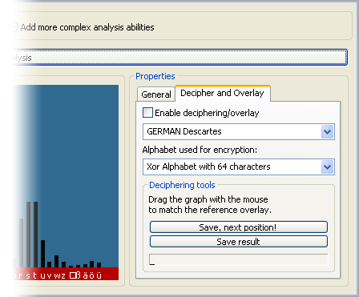
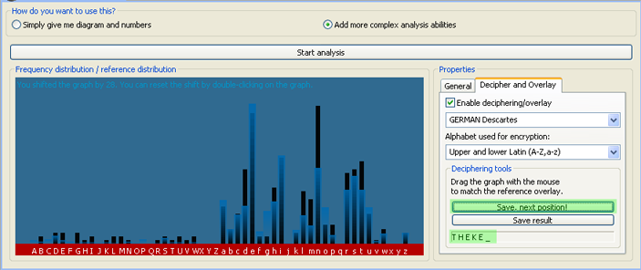

L'analyse de fréquence consiste à compter toutes les occurences de caractère du texte. On peut utiliser ce plugin de deux mannières en fonction de ce qu'on veut faire de la distribution de fréquence:
La vue simple affiche le pourcentage d'occurence. On peut eventuellement modifier le texte avant l'analyse (filtrer des caractères, mettre en minuscule, etc.).
La vue étendue offre plus de possibilités d'analyse. Elles sont situées dans le deuxième onglet des propriétés:

La première option est la superposition d'une distribution de référence. Elle est semi-transparente et très utile, notamment avec l'outil de déchiffrage en dessous. On peut choisir le texte de la distribution de référence dans le menu déroulant en dessous (plusieurs langues disponibles).
L'option suivante est quel ensemble de caractère (alphabet) de la distribution de référence est affiché. Si on ne veut que la distribution usuelle des majuscules, on choisit l'alphabet "Latin Majuscule".
Important: cette option s'adapte au cryptogramme automatiquement. Si on superpose un alphabet dont la cardinalité est supérieure à celle de l'alphabet du cryptogramme, l'outil ne fonctionnera pas correctement.
Outils de déchiffrage: Activer la superposition, mettre la taille de clé correcte (onglet "General"), et essayer de faire correspondre la référence en superposition avec votre graphique (barres noires) en le glissant avec la souris. Quand vous réussissez à obtenir une bonne correspondance, vous avez le caractère de la clé pour cette position dans la chaine de caractère de la clé. Clicker sur le bouton "Sauver, position suivante!" pour continuer à déchiffrer le texte. Position par position la clé est révélée en bas de l'outil de déchiffrage. Vous pouvez aussi cliquer dans ce champ pour mettre la clé manuellement.

Comme pour le test de Friedman, l'analyse de fréquence intègre un assistant pout Vigenère. Clicker sur "Save result" pour sauver le résultat dans l'assistant Vigenère.